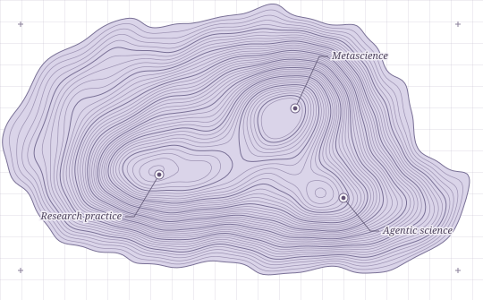

AI-NATIVE RESEARCH ATLAS
The Metascience of
Agentic Science
Mapping the Emerging Landscape · 2025–2026
Agentic Science 元科学研究的新兴格局

RESOURCE DIRECTORY
研究资源索引
正在载入研究数据…
OVERVIEW
研究背景与主要观察
当科研智能体开始提出问题、执行研究并提交成果，科学共同体如何判断这些工作的价值？这份初步的、非穷尽性的研究地图，追踪围绕这一问题出现的学术场所、研究实践与制度实验。